Contradiction
Defendant Not In A Position of Trust
Initial Interview (Haines):
“The only reason that I know him is because the old bartender who used to work at Schooly’s is his ex-wife. So that’s how I know him.”
Trial Testimony:
“As the night progressed, I had hung out with Ben and Jay and Steve quite a bit throughout the night.”
Analysis: Across two interviews, Deal tied her knowledge of the defendant to Tiffany rather than to any independent relationship with the defendant himself. Only later did the story expand into substantially greater personal familiarity. That shift is significant because it fits the later “position of trust” theory that was manufactured by the ADA, even though the earlier accounts do not describe an ongoing personal relationship with the defendant. Later the expansion followed the ADA’s plea-pressure phase rather than arising naturally from the original record.
Contradiction
Narrative Evolution
Relationship Conflict
Manufactured Familiarity Through Tiffany
Core Point: Deal’s own statements repeatedly trace any familiarity with Allen through Tiffany, not through an independent relationship with Allen himself.
First Interview: “I have been there before with Tiffany. Tiffany is his ex-wife. Before they were separated, me and her went over there and cooked dinner for her and her kids.”
First Interview: “His wife or his ex-wife was the bartender at Schooly’s. Like two years ago, and me and her were really close. That’s how I met Ben.”
First Interview: “The only reason that I know him is because the old bartender that used to work at Schooly’s is his ex-husband—so that’s how I know him.”
Second Interview: “It was no later than 2:45, so I walked inside. I’d been in this house before because I’d been there with Tiffany.”
First Interview: “His wife or his ex-wife was the bartender at Schooly’s. Like two years ago, and me and her were really close. That’s how I met Ben.”
First Interview: “The only reason that I know him is because the old bartender that used to work at Schooly’s is his ex-husband—so that’s how I know him.”
Second Interview: “It was no later than 2:45, so I walked inside. I’d been in this house before because I’d been there with Tiffany.”
Analysis: These statements consistently route familiarity through Tiffany. That is materially different from later testimony implying broader personal familiarity with Allen. The statements by Deal were changed to support the threat from the ADA since the defendant refused her plea deal.
False Familiarity
Position of Trust
Contradiction
Carmen’s Lack of Knowledge of the Defendant
Initial Interview (Haines):
Officer Haines: “Will you be comfortable with us contacting Carmen about this, or would you prefer that we wait for you?”
Lauren Deal: “I think I need to wait and tell her, if you don’t mind.”
Lauren Deal: “I don’t even think she knew him.”
Lauren Deal: “I think I need to wait and tell her, if you don’t mind.”
Lauren Deal: “I don’t even think she knew him.”
Later Accounts:
“I told Carmen I’d be there later.”
“I told Carmen that I was going to go over there, and that’s what happened.”
“I told Carmen that I was going to go over there, and that’s what happened.”
Analysis: The account moves from Carmen not knowing Allen and not yet being told anything, to Deal claiming she informed Carmen of specific plans. That progression is a legitimate narrative-shift point and should be framed that way.
Timeline Issue
Narrative Shift
Contradiction
The Alleged Bonfire Invitation
Carmen Love’s Interview with Freeman:
“When I left, she was standing at the table, smoking a cigarette by herself, and she said that she would call if she needed a ride.”
Carmen’s account, as presented here, includes no bonfire discussion and no meaningful interaction with Allen’s group before her departure.
Trial Testimony:
“Ben had mentioned that he was going to have a bonfire over at his house, and that I was more than welcome to come hang out with them.”
“As the night progressed, I had hung out with Ben … and I told Carmen that I was going to go over there.”
“As the night progressed, I had hung out with Ben … and I told Carmen that I was going to go over there.”
Analysis: If the video shows Carmen leaving at 12:41 a.m., then the claimed near-closing discussion with Carmen about going to a bonfire cannot be accepted at face value. That makes this point important both for impeachment and for the reliability of the broader timeline.
Video Evidence
Timeline Impossibility
Witness
Carmen’s Original Statements
- Carmen said Lauren remained at the bar by choice and said she was fine.
- Carmen said she did not know “Ben Allen.”
- Her account, as presented here, includes no bonfire discussion.
- She said James offered to come back for Lauren, but Lauren declined.
- She provided names of people present, while the page contends that later follow-up was limited or absent.
Analysis: These points matter because they undercut parts of the later narrative. The argument is stronger when framed as a conflict between Carmen’s recorded account and later investigative or testimonial framing, rather than as a categorical accusation stated as fact.
Didn't Know His Name
She Say Why Stay
Call If She Needed A Ride
Wasn't A Lot Of People — Gives Names
Opening
Contradiction
Key Exculpatory
Audio Corroborated
Conflict
Freeman’s Familial Relationship
- Carmen is related to Detective Freeman.
- Carmen’s original statements materially undercut the accuser’s narrative given to police.
- That relationship bears directly on impartiality, disclosure, and credibility issues.

Analysis: This point should be framed carefully. A familial relationship between the investigating detective and a witness whose account cuts against the State’s theory raises serious conflict-of-interest and disclosure concerns. It is better to reserve specific constitutional labels for a separate legal-analysis card.
Conflict of Interest
Disclosure Issue
Contradiction
Used as Probable Cause for Arrest
- The accuser claimed she told Carmen near 2:00 a.m. that she was going to a bonfire with Ben.
- The video shows Carmen leaving at 12:41 a.m., making that conversation impossible as described.
- The video conflicts with claims that the groups were “hanging out together.”
- The video conflicts with the claimed greeting narrative.
- Carmen’s account described Lauren as remaining by choice rather than under coercion.
Analysis: This is one of the strongest points. The disciplined version is: the probable-cause narrative appears to rely on statements that were contradicted, disputed, or susceptible to objective testing. That is stronger than overstating the conclusion.
Timeline Impossibility
Probable Cause
Timeline
Bonfire and Bar Closing: Temporal Impossibility
- Deal claimed she told Carmen at “closing,” around 2:00 a.m., that she would go to a bonfire with Ben.
- The video shows Carmen and James leaving at 12:41 a.m.
- Peter West left at 12:35 a.m.
- That chronology does not leave room for the claimed 2:00 a.m. conversation.
- The departure sequence shown on video does not match the later group-departure account given by Deal.
Video Evidence
Contradiction
Relationship
The Manufactured “Position of Trust”
- Deal initially said she knew the defendant through Tiffany, his ex-wife.
- She also said she had not seen him in about a year, thought he was in the military, and believed he was deployed. The defendant wasn't deployed, wasn't in the military at the time, and the very fact that she claimed she hadn't seen him in over a year shows there is no support for the aggravating factor that was manufactured by the ADA.
- The reunification materials indicate that Allen had the family home in 2015 and that Tiffany’s contact with the children remained governed by a staged reunification plan.
- By December 2015, the reunification report indicates Tiffany was still in Phase 2 and could see the children only with therapist supervision.
- The same materials indicate that communication about the children was routed through the therapist or the courts rather than ordinary informal contact.
- Deal's claimed familiarity with Allen’s house and children at this time would be difficult to sustain and appear to be materially overstated as her testimony proved. Deal never gave the location of the actual guest bathroom or the largest room in the house among other locations both up and downstairs.
- The aggravating factor was added after plea negotiations failed so the ADA coordinated with the witness to enforce her threat.

Trial Testimony:
ADA Bartholomew: “What was Tiffany's last name?”
Lauren Deal: “Allen.”
ADA Bartholomew: “When did you first meet Tiffany Allen?”
Lauren Deal: “2015.”
ADA Bartholomew: “What about the defendant? When did you first meet him?”
Lauren Deal: “I really don't know.”
ADA Bartholomew: “At the time you went to Tiffany's house, were they still married?”
Lauren Deal: “Off and on, you never really knew.”
ADA Bartholomew: “Were they living in the same residence?”
Lauren Deal: “Yes.”
ADA Bartholomew: “How many times would you estimate you had gone over to that house?”
Lauren Deal: “Maybe 10.”
ADA Bartholomew: “What would you do when you would go there?”
Lauren Deal: “Grilled out, ate, have a bonfire, sit around and talk, just hang out.”
Lauren Deal: “Allen.”
ADA Bartholomew: “When did you first meet Tiffany Allen?”
Lauren Deal: “2015.”
ADA Bartholomew: “What about the defendant? When did you first meet him?”
Lauren Deal: “I really don't know.”
ADA Bartholomew: “At the time you went to Tiffany's house, were they still married?”
Lauren Deal: “Off and on, you never really knew.”
ADA Bartholomew: “Were they living in the same residence?”
Lauren Deal: “Yes.”
ADA Bartholomew: “How many times would you estimate you had gone over to that house?”
Lauren Deal: “Maybe 10.”
ADA Bartholomew: “What would you do when you would go there?”
Lauren Deal: “Grilled out, ate, have a bonfire, sit around and talk, just hang out.”
Supporting Record:
Family Reunification Report (source PDF unavailable)
Analysis: The “position of trust” aggravator did not arise naturally from a stable evidentiary record, but from later narrative expansion. The trial testimony presents a casual, ongoing family setting in which Tiffany and the defendant were effectively living together and socializing at the house. The reunification records instead show court-monitored, phased contact, separate therapists for the parents and children, and tightly controlled interaction, that testimony is not just loosely phrased. It is substantially undercut by the record which is readily available in Lee County. Tiffany was known in the courthosuse. The ADA would have had to do little to uncover this deception unless she were the one putting it in place
Vindictiveness
False Aggravator
Timeline Discrepancy
Detective Assigned Before the Factual Predicate Existed
Documented Timeline:
- 16:17 — Sheriff’s Office receives a report of a sexual assault.
- 16:30 — Freeman states he received a call about a sexual-assault case and left a wedding to respond.
- 16:58 — Haines begins interviewing Lauren and states his role was to determine whether the matter warranted assignment to a detective.
- 17:36 — The page states the first explicit mention of “sexual assault” by the accuser came near the end of the interview.
Analysis: If that sequence is accurate, then the detective assignment appears to have been functionally made before the factual development Haines described as necessary to justify it. That is a chronology problem worth emphasizing. It supports scrutiny of dispatch, reports, and sequencing without overstating the conclusion.
Timeline Impossibility
Pre-Coordination Theory
Procedure
Warrantless Arrest Posed as Warrant Arrest
- The magistrate form reportedly states “arrest without warrant.”
- Freeman testified in a manner the page characterizes as suggesting that warrant approval came first.
- The detention occurred before magistrate review.
- There is no affidavit, no note, and no contemporaneous record of what Freeman told the magistrate.
Analysis: The key issue is sequence. If Allen was already detained and not free to leave before magistrate review, then later paperwork cannot erase the earlier seizure. This sequence violates both the Fourth Amendment and established local department arrest procedures.
Fourth Amendment
Arrest Sequence
Forensics
DNA: “Failed to Reveal Spermatozoa”
- The report showed no spermatozoa.
- The ADA represented during plea discussions that there was sperm evidence before a sperm-specific test had even been submitted.
- The ADA's in chamber's explanation characterized the situation as a misunderstanding despite the prosecutor’s experience and specialization.
- Prosecutorial Experience:
Approximately ten (10) years as an Assistant District Attorney in Moore County, North Carolina.
During her Moore County tenure, she achieved one of the highest conviction rates for sexual assault in the state.
Judicial Experience: Appointed by Governor Roy Cooper in 2019 as a District Court Judge serving Moore and Hoke Counties. Presided over criminal, juvenile, child support, and domestic violence dockets. Lost the election for the seat in 2020, returning to prosecutorial work.
Education and Academic Record: Graduated at the top of her law school class. Served as Managing Editor of Law Review, demonstrating advanced analytical and editorial skills.
Specialized Training and Certifications: Completed a digital evidence class conducted by the U.S. Secret Service.
Trained by experts from the University of North Carolina (UNC) on evidence interpretation in child abuse and sexual assault cases.
Certified as a Criminal Justice Instructor by the State of North Carolina, authorized to train law enforcement and legal professionals.
Instituted and trained in evidence-based prosecution (EBP) methods for domestic violence cases.
Accumulated numerous hours of general legal and criminal procedure training.
If this person made a mistake over such a simple thing as reading a document that relates to something that is her expertise then she should be fired and those trainings should no longer be paid for by the citizens.
Analysis: If the plea representation overstated the forensic evidence, that point is serious. It is strongest when presented as a specific evidentiary misrepresentation with litigation consequences, not as rhetorical flourish.
Misrepresentation
Plea Coercion
Injury
The Bruises That Never Existed
- Deal reportedly said she sustained bruising to her arms from being pinned.
- Contemporaneous medical photographs documented a knee contusion and foot abrasion, but not arm injuries consistent with forcible restraint.
- Under oath, Freeman later testified he observed bruising before taking Deal back for her interview. This was impossible since Deal was already in the interview room when he arrived.
Analysis: If the medical photographs and records do not document the arm bruising described during her police interview, that discrepancy is powerful impeachment. The tight version is that the physical documentation does not appear to match the alleged mechanism of restraint.
Medical Evidence
Contradiction
Logic
The Bathroom Paradox
The following analysis deconstructs the alleged assault and identifies the specific factors that render the account a “triangular square” — a logical and physical absurdity that cannot be reconciled with the laws of physics, anatomy, or behavioral logic.
Alleged Sequence
According to Deal’s interviews and trial testimony: Allen claimed there was no toilet paper in the guest bathroom and directed Deal to the master bedroom bathroom. She entered to urinate; Allen allegedly stood in the doorway and refused to turn around. After Deal stood, wiped, and re-dressed, she was allegedly grabbed as she exited and pushed backward onto the bed. Allen allegedly used one hand to pin both her arms above her head, used his other hand to remove her tight leggings and shoes, and committed a forcible sexual act for two to three minutes until he “loosened his grip” and she fled.
Logical & Physical Impossibilities
- Behavioral logic failure. If the defendant intended assault, the moment of greatest vulnerability was already present in the bathroom while Deal’s leggings were down. The narrative requires him to forfeit that moment, wait for her to fully re-dress, and then immediately struggle to undress her again on an elevated bed.
- Simultaneous restraint and undressing. Allen could not maintain an overhead two-wrist grip while simultaneously standing between Deal’s legs, reaching her waistband, and pulling leggings that would be pinned under her own weight against the mattress.
- One-hand removal of tight clothing from a resisting adult. Removing tight leggings and shoes from a supine, actively resisting adult (Deal weighed approximately 180 lbs) requires two hands for leverage and counter-pressure. Performing this with one hand while the other pins both arms overhead is a physiological impossibility.
- Broken finger. At the time of the incident Allen had a broken finger on his left hand that had never fully healed, materially impairing grip strength and manual function. This forecloses a forceful one-handed bilateral wrist restraint.
- Body geometry blocks the legging path. If Allen was positioned between Deal’s legs to commit the act, his own body would physically obstruct the downward travel of the leggings. They could not pass her knees without him fully withdrawing and releasing his grip.
- Bed height and landing physics. The master bedroom bed was 36 inches high — above Deal’s approximate center of gravity (~34 inches). A horizontal push from behind would rotate her torso forward into the edge of the bed or cause her to roll off the side. Landing flat on her back with feet suspended would require a precise upward hoist that Deal explicitly stated did not occur.
- Timeline compression. Witness Steven Happel placed less than five minutes between Deal’s entry and exit. That window must contain: entering the house, unlocking the door, bathroom use, re-dressing, the push, the restraint, undressing, the act itself, and the escape. The density of claimed action within five minutes is a logistical absurdity.
Physical Record (Silent Witness)
- Post-event presentation. Triage nurse Daniel Lacambacal documented Deal as “content, relaxed” with a self-reported pain score of zero immediately following the event.
- No restraint injuries. Forceful overhead immobilization of both wrists would necessarily produce grip marks, wrist bruising, or shoulder impact marks. Hospital photographs and the SANE examination confirmed no bruising to the wrists, arms, or shoulders.
- No acute skeletal injuries. X-rays of Deal’s knee and legs confirmed “no acute osseous abnormality” — no fractures consistent with an alleged violent push onto a 36-inch bed.
- No spermatozoa. Microscopic serological examination failed to reveal the presence of spermatozoa on vaginal or external swabs, contradicting the claim of vaginal penetration.
These cumulative failures demonstrate that the prosecution’s case rested on narrative engineering rather than factual reporting. The accuser’s account sharpened over time to satisfy legal elements — shifting from “fighting back” to “freezing” — only after forensic failures and physical impossibilities were exposed. When a claimed sequence cannot occur under the laws of physics and anatomy, the evidentiary foundation for probable cause and conviction does not exist.
Biomechanics
Impossibility
Forensic & Documentary Evidence
Documentation Error
Incident Report: Contradictions in Initial Documentation
The initial incident reports contain multiple factual errors spanning basic descriptors, alcohol notation, and injury documentation:
- Eye color: Allen's eye color is recorded incorrectly — a basic intake error suggesting the reporting officer was not working from direct observation.
- Alcohol asymmetry: Deal is recorded as "no drugs or alcohol" despite the evening centering on a bar. Allen's record carries an alcohol notation; Deal's does not.
- Injury absence: The internal report contains no mention of external injuries — directly contrary to Freeman's later trial testimony that he observed arm bruising.


Analysis: Incorrect eye color suggests the reporting officer was not observing the subject directly or verifying against identification. The asymmetric alcohol notation — Allen marked, Deal not — supports the theory that the intake record was oriented toward the accuser's narrative at the earliest stage. The internal report's silence on external injuries directly contradicts Freeman's testimony and the later claim that Deal showed him arm bruises, regardless of whether that showing allegedly occurred before or during the recorded interview.
Documentation Error
Contradiction
Intake Record
Forensics
Lab Chain of Custody: Submission, Return, and 3-Year Resubmission
The forensic evidence chain spans an original submission in November 2019, a negative DNA result in May 2020, and an unexplained resubmission in January 2023 — over three years after original collection.
- Nov. 5, 2019: Evidence submitted to lab following the alleged assault.
- May 11, 2020: Lab documents "no significant amount of male DNA."
- Jan. 6, 2023: Evidence resubmitted — more than three years after original collection. No new offense. No new complainant.
- Chain-of-custody transfer records document evidence returns to the Sheriff's Office.


Analysis: A resubmission more than three years after original collection requires explanation. Combined with the ADA's premature representation that sperm evidence existed before the sperm-specific test was completed — followed by a negative result — the extended chain raises questions about what prompted the January 2023 resubmission, whether degradation or contamination occurred during the holding interval, and whether the original negative result triggered any disclosure obligation.
Forensics
Chain of Custody
DNA
Coercion
Extortion Threat: Conditional Settlement Demand
A series of documented messages constitute an extortion demand — pay a $150,000 settlement or face continued prosecution.


Analysis: Their significance lies in their timing — after the original charge but before trial — and in their character: conditioning resolution on a financial payment. That framing transforms a criminal prosecution into a mechanism of private financial leverage. Whether this constitutes extortion under N.C.G.S. § 14-118.4 or actionable coercion under related doctrines is a question the record compels.
Coercion
Plea Pressure
Extortion
Custody / Magistrate Process
Happel: Night-Of Text Thread — October 27, 2019 (Magistrate Absence)
A continuous text message thread between the defendant and Steven Happel, documents the defendant's custodial status, bail uncertainty, and — most significantly — the fact that the defendant was never personally taken before the magistrate. The thread records the defendant communicating in real time while detained at the police station as Freeman was with the magistrate.
Key statements from the thread (verbatim):
- "He is going to see if I even need it [bail] / He is checking now / with the magistrate" — the defendant reports a third party ("Freeman") is at the magistrate while the defendant himself remains in custody.
- "Nah. Still here / Waiting for him to get back from taking the magistrate" — the defendant explicitly states he is not at the magistrate. He is waiting at the station for Freeman to return after going to the magistrate.
- "Might need bail / Don't know yet / He said he was going to work something for me / To release me without it / They still have to file charges / Until they get the kit back" — bail and release terms were unresolved while the defendant was in custody, and charges were described as obligatory pending the DNA kit.
- "They said it would be like 6 months / There is apparently a huge backlog" — the defendant was told the DNA kit processing would take up to six months.
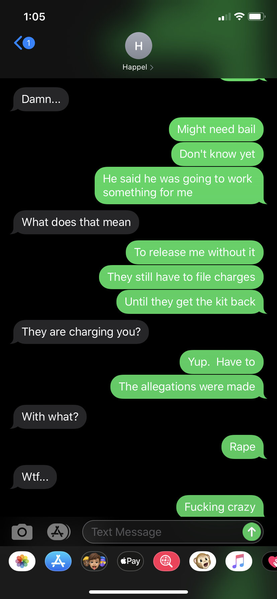


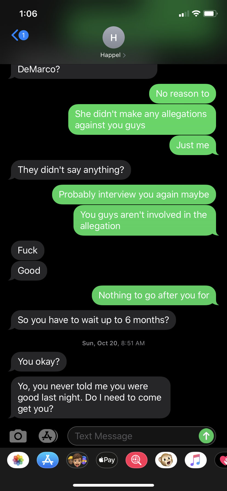
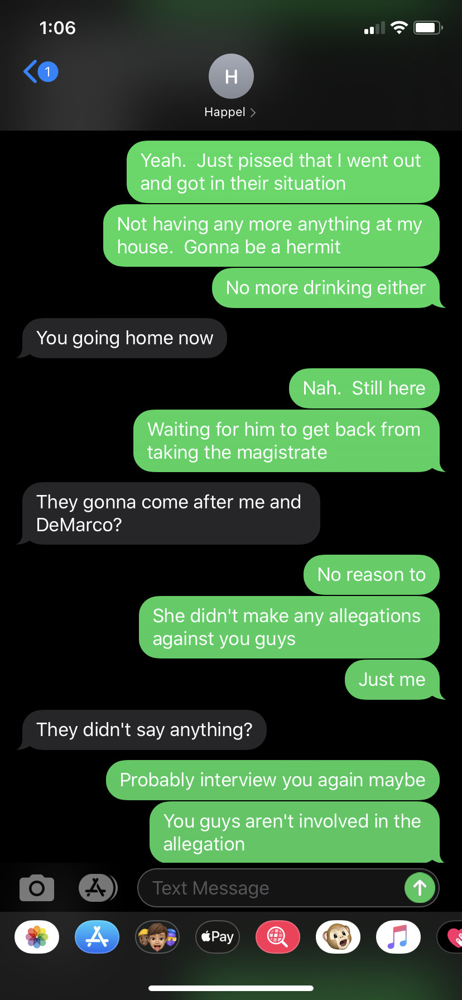
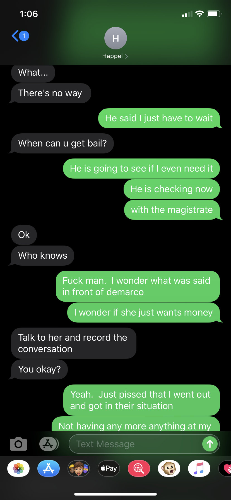
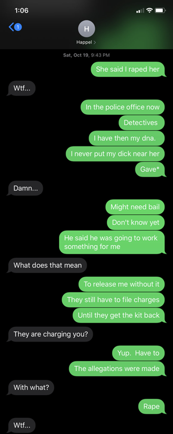
Analysis: This thread is the only contemporaneous record showing the defendant's custodial status and the mechanics of the magistrate process from the defendant's own vantage point during the detention. The two key statements — "He is checking now with the magistrate" and "Nah. Still here / Waiting for him to get back from taking the magistrate" — directly establish that the defendant was never personally presented before the magistrate. Freeman went to Magistrate Johnson while the defendant waited at downstairs in his office. This is consistent with the magistrate form's own language ("arrested without a warrant"), which reflects post-arrest review rather than pre-arrest judicial authorization. Freeman's later testimony that the warrant issued before the defendant was "processed" is placed under direct pressure by this thread: the defendant's real-time account reflects the opposite sequence — custody first, magistrate review conducted by proxy, outcome unknown at the time of these messages. The thread further documents that bail had not been determined and was still being worked out through an intermediary, and that charges were described to the defendant as obligatory pending DNA kit results. The investigation never engaged with this thread. Happel was not interviewed as a witness about what the defendant communicated during detention, and the thread was never produced or acknowledged as part of the State's disclosure process.
Magistrate Process
Warrantless Arrest
Custody Record
Brady
Missing Evidence
Misconduct
ADA Tiffany Bartholomew: Bar Misconduct Complaint Record
Screenshots document professional misconduct allegations against ADA Tiffany Bartholomew — the prosecutor responsible for the "position of trust" aggravator addition, the DNA misrepresentation during plea discussions, and allowing the furtheance of a prosecution that was not founded in probable cause.
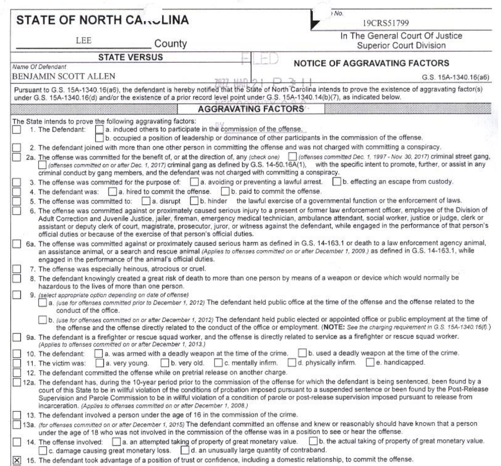


Analysis: Prior or concurrent professional conduct complaints against the prosecuting ADA are relevant to the prosecutorial misconduct issues identified throughout this archive. The pattern — aggravating-factor addition after plea refusal, DNA misrepresentation during plea leverage, and extortion-characterized settlement demand — each independently supports a Rule 8.4 or related professional conduct analysis. This material should inform any Brady or Napue motion addressing ADA conduct in this case.
Misconduct
ADA
Brady
Primary Witness Audio
Carmen Love / Detective Freeman Interview — Full Audio Archive
Seventeen excerpts from Detective Freeman's recorded interview of Carmen Love — the accuser's cousin and the only independent witness present at the bar that night. These clips document Carmen's account on the core disputed issues: familiarity with the defendant, the alleged bonfire invitation, why the accuser stayed behind, and whether any coercion occurred. Carmen is also Detective Freeman's relative, a conflict that the defense can develop further.
Opening
Night Description
Bunch Of People Around
Wasn't A Lot Of People — Gives Names
Friend Named Joseph
Joseph — Mutual Friend
Kin — Long Distance
Chloe — Hasn't Spoken To Her
Hanging Out With
Just Those Two Guys
Didn't Know His Name
Familiar Goodbye
She Say Why Stay
Said She Could Drive
Call If She Needed A Ride
Ride Back Up To Get Her
Leaving
Analysis: Carmen Love is the accuser's cousin and the only independent witness interviewed. Her recorded answers to Freeman's own questions directly undercut the bonfire-invitation narrative, the familiarity narrative, and the coercion framing. Freeman is also Carmen's relative — a conflict that colors the entire investigative record. These clips should be compared against Lauren Deal's interview audio and against Freeman's investigative summaries line by line. Carmen Love never mentions Ben Allen. She claims that she doesn't know who that is. There is no mention of a bonfire. This conversation directly contradicts the statement given by Lauren Deal to police. That means that there was contradictory evidence that undermined the accuser's credibility but it was ignored by Freeman.
Key Exculpatory
Witness Interview
Audio
Brady
Conflict of Interest
Accuser Statement Audio
Lauren Deal — Police Interview Audio Archive
Complete audio archive of excerpts from Lauren Deal's recorded police interview, organized by phase. These clips constitute the primary source record of the accuser's account as delivered to investigators. Compared against Carmen Love's interview, the Happel text thread, physical evidence, and the bar video, these clips surface material inconsistencies, late post-arrest additions to the narrative, and factual claims unsupported by any independent evidence.
Background & Prior Relationship
First Question
How I Knew Him
Know Him
Know Name
Knew Him
First / 2nd Time Met Ben
How Long (Relationship)
With Ex-Wife
Never Made Advances
Cook For Kids
Address — Been There Before
Night of — Bar
Freeman — Set Down, Started Drinking
I Did Drink
Only One Drunk — Was Steve
Steve Was Hammered
Comfortable With Everybody
Cousin Carmen
Carmen Love / Freeman
Hadn't Seen Her In A While
Stays With James
Departure & Bonfire Invitation
Bonfire Ask
When Joe Was Picked Up
He Brought Guy Friends
Who Is "We"
At the Location
Got To The House
Knew Where Everything Was
Knew Where The Bathroom Was
Takes Her Inside
Defendant Spoke — Bathroom
Talking — Freeman, Bathroom
Alleged Offense Detail
By Ben
Stood Up, Pushed
Hands Above Head (FI)
Pants Off — Hands Above Head
Pants Scenario
Did He Remove Your Clothes
Had Her In There
Intercourse
Sex
Started Kicking My Feet
Loosened Grip
Even If I Don't Want To
No Sane Person
It Was Dark
Flight & Aftermath
And Ran
Ran Into Road (First Telling)
Yelling For Me
Tried To Find Me
How Long Running
Running — Too Nice
Getting Out Of The Woods
Ran Out Screaming
First Telling — Hug
Physical Evidence Claimed
Bruises — Held Down, Took Pictures
Take Pictures
Reporting & Detective
Called Mom
A Detective Comes Out
Hub Deploy
Freeman — Fifteen Minutes Out
Called This Morning
Post-Statement Additions
Forgot To Include — The Search
Forgot To Include — The Search (2)
Forgot To Include — The Search (3)
Forgot To Include — Back Into Woods
Forgot To Include — Not Intoxicated
Again — No Mention of Ben
Didn't Want To Do This
Notable / Credibility Indicators
A Lot Of People Knowing
All The Stuff You Needed
Guilty — Everyone Says So
She's Gonna Be So Mad At Me
That's Shit — And He Agrees
What Would You Do
Elicit Sympathy
Promised — Be At Her House
I Have No...
Don't Remember Where She Put Her Items
No Resources
Going To Watch
Testify (Laughing)
Everything I Could
Works For Ellis Law
Analysis: The interview record, taken as a whole, contains factual claims directly contradicted by Carmen Love's recorded account, by the bar video, and by the physical evidence. The post-arrest additions — clustered in the "Forgot To Include" clips — are particularly significant: omissions added after the defendant's arrest constitute a classic pattern of narrative engineering that the defense can exploit for impeachment. The credibility-indicator clips in the final section document moments where the accuser comments on the process, expresses anticipated outcomes, and frames her emotional posture in ways that invite scrutiny under cross-examination.
Accuser Statement
Contradiction
Audio
Impeachment
Narrative Engineering
Timeline Contradiction
Peter, Carmen, and James Leave Together Claim
ClaimLauren states everyone left together and she then accepted the bonfire invite. Video confirms this is blatantly false.
SourceAccuser statements to police and trial testimony.
Contradicting EvidenceVideo evidence supports a different departure sequence and undercuts the claimed narrative.
Effect on CaseUndercuts claimed corroboration and probable-cause framing. Video shows Peter West leaving by himself and later he was followed by Carmen Love and James Morrison
Timeline Impossibility
Bonfire / 2:00 AM Conversation
ClaimAccuser claims she told Carmen near closing she was going to the bonfire.
SourcePolice/trial narrative.
Contradicting EvidenceCarmen and James leave at 12:41 AM. Carmen says no bonfire discussion and did not know Ben.
Effect on CaseShows post hoc story reconstruction and false corroboration.
🎵 Carmen Love / Det. Freeman — Key Excerpts
Opening
Night Description
Familiar Goodbye
Leaving
Witness Conflict
Reason Lauren Stayed at Bar
ClaimLauren forced her way into group. Later narrative frames isolation/coercion.
SourceEvolving accuser narrative.
Contradicting EvidenceCarmen reports Lauren stayed by choice and was fine even after trying to get her to come with her. The defendant and the guys with him did not meet Lauren until Love was leaving. She had told Love to leave so she could stick herself with the defendants group leading to an obvious argumant that was caught on camera.
Effect on CaseEarliest witness account conflicts with later victim framing.
🎵 Carmen Love / Det. Freeman — Key Excerpts
She Say Why Stay
Said She Could Drive
Call If She Needed A Ride
Video Contradiction
Initial Hug / Warmth Narrative
ClaimAccuser claims warm hug and reciprocal affection.
SourceTrial testimony.
Contradicting EvidenceVideo appears to show no reciprocal hug; posture and behavior conflict with the claim.
Effect on CaseUndercuts relationship narrative and witness reliability.
Behavioral Conflict
Who Invited Whom / Pursuit Behavior
ClaimImplied Ben pursued her and invited her along.
SourceAccuser narrative supported by prosecution framing.
Contradicting EvidenceVideo appears to support the inference that Lauren repeatedly pursued and was rebuffed especially when she tried to hug the defendant. Lauren Deal approached him multiple times. The defendant did not approach her once. He didn't even return the hug that she gave when she thought it would smooth over her forcing herself on the group.
Effect on CaseWeakens coercion framing and supports narrative tailoring.
Medical Conflict
Bruises from Restraint
ClaimAccuser reports arm bruising from restraint.
SourceStatements to nurse/investigators.
Contradicting EvidenceThe bruising of her arms was made up for the intial interview but when the pictures came back the story changed. Medical records/photos show knee contusion and superficial foot abrasion only.
Effect on CasePhysical evidence fails to support alleged assault mechanism even though it was claimed initially. This was an early attempt to make her accusations sound believable just like the "escape" that never happened.
Testimony Conflict
Freeman Seeing Bruises in Interview
ClaimFreeman says bruises were shown during the recorded interview or immediately before it.
SourceTrial testimony.
Contradicting EvidenceThe recording does not show Deal displaying arm bruises. Under questioning, Freeman shifted the timing to an earlier off-camera moment.
Effect on Case
Steve Freeman: “Well, I mean, there was — as far as injuries go, physical injuries, I could see them on her feet. She had bruising on her arms.”
Attorney Cruz: “You seen the bruises through her long-sleeved shirt?”
Steve Freeman: “No, I mean, she showed them to me.”
Attorney Cruz: “She pulled up her sleeves? I didn't see that in the video. Was that in the video?”
Steve Freeman: “When she got there.”
Attorney Cruz: “So prior to the interview?”
Steve Freeman: “Yeah, as we were going back.”
The account shifts from bruises being shown on the recording to bruises being shown before the recorded exchange. That change matters because it weakens the reliability of the claimed injury observation and fits the broader documentation problems reflected in the intake paperwork.
Steve Freeman: “Well, I mean, there was — as far as injuries go, physical injuries, I could see them on her feet. She had bruising on her arms.”
Attorney Cruz: “You seen the bruises through her long-sleeved shirt?”
Steve Freeman: “No, I mean, she showed them to me.”
Attorney Cruz: “She pulled up her sleeves? I didn't see that in the video. Was that in the video?”
Steve Freeman: “When she got there.”
Attorney Cruz: “So prior to the interview?”
Steve Freeman: “Yeah, as we were going back.”
The account shifts from bruises being shown on the recording to bruises being shown before the recorded exchange. That change matters because it weakens the reliability of the claimed injury observation and fits the broader documentation problems reflected in the intake paperwork.

Biomechanical Impossibility
Bathroom Sequence / Clothing Removal
ClaimNarrative requires rapid disrobing and restraint sequence.
SourceAccuser bathroom incident narrative.
Contradicting EvidenceSequence is biomechanically implausible and inconsistent with injury profile and DNA findings. The lack of details is stark. The ADA focuses on emotional framing instead of walking through a fact based questioning while she was on the stand.
Effect on CaseSupports theory of construction rather than lived event.
Relationship Conflict
Knowledge of Ben / Relationship Depth
ClaimAccuser portrays strong familiarity with Ben.
SourceStatements to Haines and trial testimony.
Contradicting EvidenceShe also says she had not seen him in a year, she thought he was in the military and the video shows defendant being polite without seeking her out or behaving as though they had meaningful personal familiarity.
He believed she was handicapped mentally so was nice to her. In her own words she had not seen him in a year (one Facebook message in three years) how did he hold a position of trust?
He believed she was handicapped mentally so was nice to her. In her own words she had not seen him in a year (one Facebook message in three years) how did he hold a position of trust?
Effect on CaseUndercuts the claimed depth of familiarity and weakens the “position of trust” aggravator foundation.
Procedure Conflict
Arrest Type: Warrant vs No Warrant
ClaimFreeman says warrant issued before processing.
SourceTrial testimony.
Contradicting EvidenceMagistrate form indicates arrest without warrant/post-arrest review.
Effect on CaseRaises legality/sequencing concerns around seizure process.
Conflict of Interest
Carmen as "Neutral" Third Party
ClaimCarmen presented as neutral corroborating witness.
SourceInvestigative paperwork and testimony.
Contradicting EvidenceCarmen is Freeman's relative and her original statements undercut her cousin's, Lauren Deal's, narrative without realizing it.
Effect on CaseRaises disclosure and conflict-of-interest concerns.
Investigative Scope
Selective Witness Interviewing
ClaimInvestigation presented as complete workup.
SourceFreeman account of investigative process.
Contradicting EvidenceJames/Peter not interviewed despite relevance; selection bias evident.
Effect on CasePattern of pursuing only evidence that fits State narrative.
Authentication Failure
Exhibit 4 Authorship and Authenticity
ClaimMessages are between Lauren and Ben and prove intent.
SourceState use of Exhibit 4.
Contradicting EvidenceContent references non-Ben sender, no metadata/full thread/phone extraction testimony.
Effect on CaseAuthentication is materially compromised.
Forensic Contradiction
DNA / Spermatozoa Narrative
ClaimState implied sperm evidence during plea leverage.
SourceADA statements during plea discussions.
Contradicting EvidenceInitial testing insufficient; later sperm test submitted and returned negative.
Effect on CasePotential plea pressure via misrepresentation.
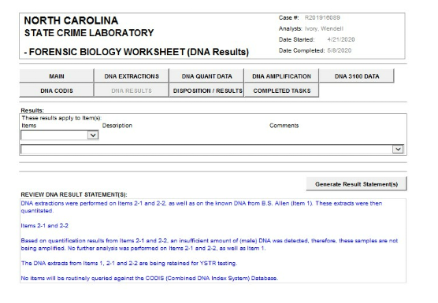
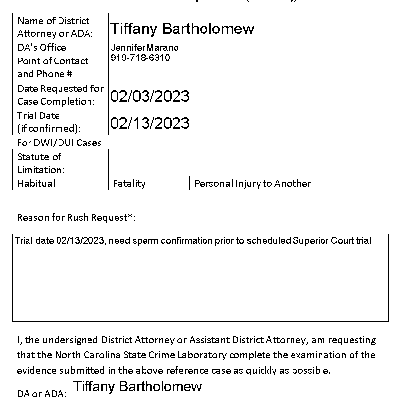
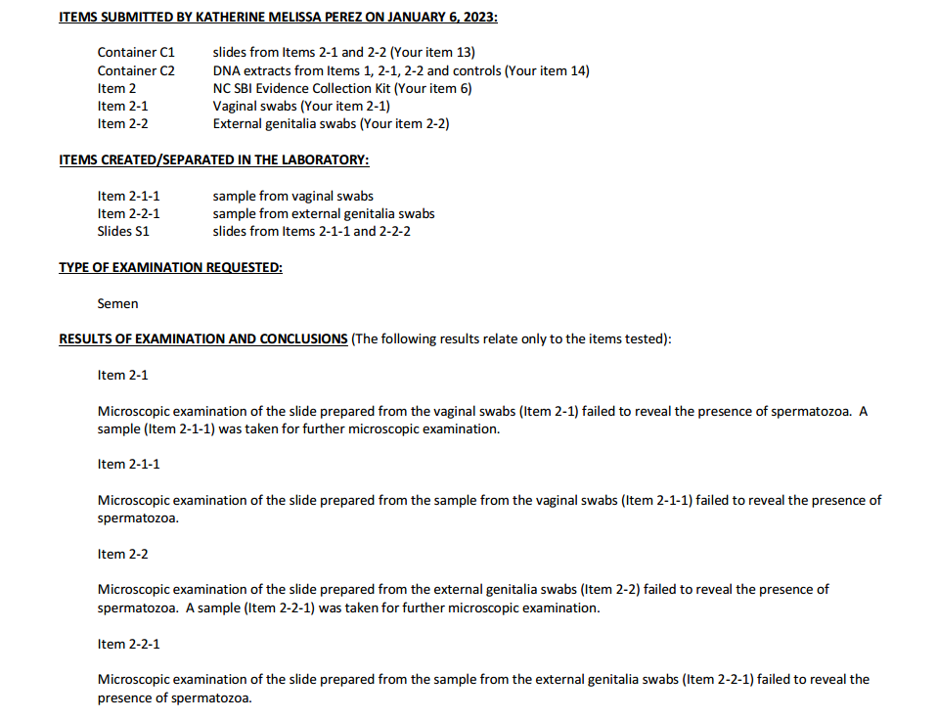
Charging Timing Conflict
Aggravator Added After Plea Refusal
Claim"Position of trust" aggravator framed as natural fact outgrowth.
SourcePost-plea charging decision.
Contradicting EvidenceAggravator appears only after plea rejection with no new evidence. It was threatened and then followed through on.
Effect on CaseSupports vindictiveness inference and trial-rights penalty narrative.
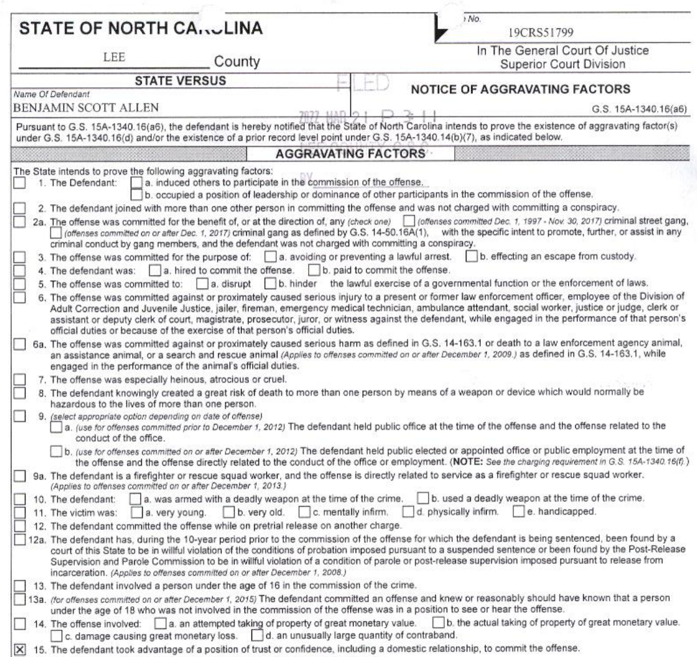
Behavioral Conflict
Deal Makes Initial Contact With Allen
ClaimProsecution narrative implies Allen approached and engaged Deal.
SourceAccuser testimony and prosecution framing.
Contradicting EvidenceVideo captures the moment of initial contact and shows Deal initiating the interaction with the defendant's group. The initial contact doesn't involve the hug Deal testified to.
Effect on CaseDirectly contradicts the passivity framing embedded in the accuser's account of how the evening began.
Behavioral Evidence
Deal Gives Keys to Demarco
ClaimAccuser's account implies she lacked independent agency regarding her transportation and movements that night.
SourceProsecution narrative and accuser testimony about how she came to go to the defendant's residence.
Contradicting EvidenceVideo captures Deal handing keys to Demarco — deliberate intentional action inconsistent with a passive, coerced posture. She testified and said in each interview that she gave them to the defendant showing she has been lying from the beginning. Lauren Deal also refused to go home with Carmen Love even though Carmen Love said she told her to come with her numerous times and she refused.
Effect on CaseEstablishes that Deal was exercising independent agency and making deliberate choices about transportation that night. She refused to go home with the friends that brought her for a reason.
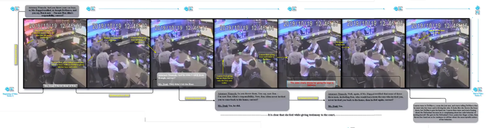
Behavioral Conflict
Deal Yells at Allen After Being Told She Cannot Invite Herself
ClaimAccuser testimony characterizes the evening as warm and mutually engaged.
SourceTrial testimony and prosecution narrative of consensual relationship.
Contradicting EvidenceVideo shows Deal becoming visibly angry and yelling at Allen after he refused to take her keys and became upset that she gave her keys to his DD. Her reaction demonstrates she believed she had been refused access — not welcomed.
Effect on CaseOne of the most direct behavioral contradictions in the record. A person warmly invited to a bonfire does not yell at the host for refusing the invite. Directly undercuts both the consent narrative and the "position of trust" aggravator.
Behavioral Evidence
Deal's Final Blowup — Every Bystander Stares
ClaimProsecution frames Deal as isolated and controlled throughout the evening.
SourceAccuser account and trial framing.
Contradicting EvidenceVideo captures a final outburst conspicuous enough that every nearby person turned to observe. This is not the behavior of a quietly victimized person.
Effect on CaseCorroborates the arc of escalating voluntary behavior captured across segments D, G, H, I, K, L, and M. Deal's collective conduct that night — initiating contact, giving away keys, yelling, repeated pursuit, multiple confrontations — directly contradicts the passive-victim characterization underlying the prosecution's theory.
Evidence File Inventory
Every evidence file shipped with this site, rendered from documents/data/evidence-export.json — a machine-generated, verified inventory. Each file carries its SHA-256 integrity hash.
| Title | Type | Collection | Size | SHA-256 | Open |
|---|
Loading inventory…
×